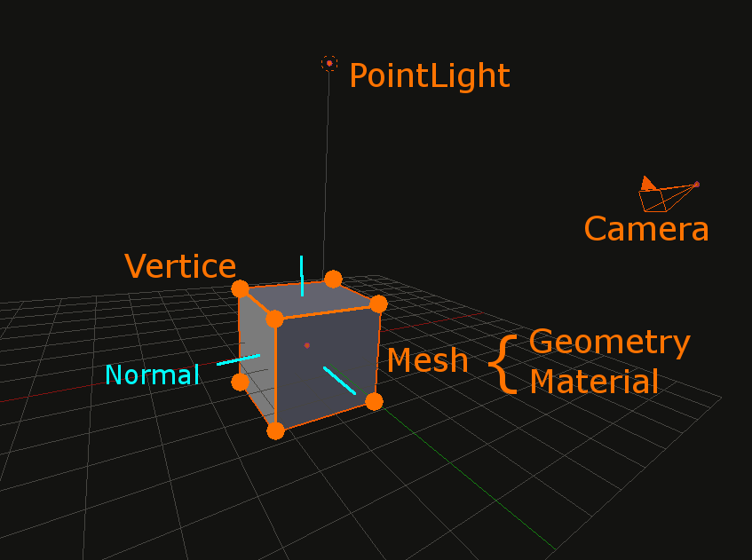

Three.js
Un moteur 3D Javascript
Three.js
-
librairie open source facilitant l'utilisation de WebGL
github.com/mrdoob/three.js
-
créé en 2010 par Ricardo Cabello
-
8000 commits, 59 releases, 300 contributors
WebGL ?
« WebGL est une [API].
Elle permet d'utiliser OpenGL ES au sein d'une page web [..] HTML5
en s'aidant de JavaScript, [..] de l'accélération matérielle pour les
calculs et le rendu 3D à l'aide des pilotes OpenGL ES [..]
et du processeur graphique »

OK, mais concrètement ?
-
Via des méthodes très similaires à OpenGL
gl.clear(gl.COLOR_BUFFER_BIT | gl.DEPTH_BUFFER_BIT);
-
On manipule des tableaux de points 3D, de faces
et on place les objets en transformant des matrices
mvPushMatrix(); mvRotate(cubeRotation, [1, 0, 1]); mvTranslate([cubeXOffset, cubeYOffset, cubeZOffset]);
Exemple, pour un cube
// Create a buffer for the cube's vertices.
cubeVerticesBuffer = gl.createBuffer();
// Select the cubeVerticesBuffer as the one to apply vertex
// operations to from here out.
gl.bindBuffer(gl.ARRAY_BUFFER, cubeVerticesBuffer);
// Now create an array of vertices for the cube.
var vertices = [
// Front face
-1.0, -1.0, 1.0,
1.0, -1.0, 1.0,
1.0, 1.0, 1.0,
-1.0, 1.0, 1.0,
// Back face
-1.0, -1.0, -1.0,
-1.0, 1.0, -1.0,
1.0, 1.0, -1.0,
1.0, -1.0, -1.0,
// Top face
-1.0, 1.0, -1.0,
-1.0, 1.0, 1.0,
1.0, 1.0, 1.0,
1.0, 1.0, -1.0,
// Bottom face
-1.0, -1.0, -1.0,
1.0, -1.0, -1.0,
1.0, -1.0, 1.0,
-1.0, -1.0, 1.0,
// Right face
1.0, -1.0, -1.0,
1.0, 1.0, -1.0,
1.0, 1.0, 1.0,
1.0, -1.0, 1.0,
// Left face
-1.0, -1.0, -1.0,
-1.0, -1.0, 1.0,
-1.0, 1.0, 1.0,
-1.0, 1.0, -1.0
];
// Now pass the list of vertices into WebGL to build the shape. We
// do this by creating a Float32Array from the JavaScript array,
// then use it to fill the current vertex buffer.
gl.bufferData(gl.ARRAY_BUFFER, new Float32Array(vertices), gl.STATIC_DRAW);
// Now set up the colors for the faces. We'll use solid colors
// for each face.
var colors = [
[1.0, 1.0, 1.0, 1.0], // Front face: white
[1.0, 0.0, 0.0, 1.0], // Back face: red
[0.0, 1.0, 0.0, 1.0], // Top face: green
[0.0, 0.0, 1.0, 1.0], // Bottom face: blue
[1.0, 1.0, 0.0, 1.0], // Right face: yellow
[1.0, 0.0, 1.0, 1.0] // Left face: purple
];
// Convert the array of colors into a table for all the vertices.
var generatedColors = [];
for (j=0; j<6; j++) {
var c = colors[j];
// Repeat each color four times for the four vertices of the face
for (var i=0; i<4; i++) {
generatedColors = generatedColors.concat(c);
}
}
cubeVerticesColorBuffer = gl.createBuffer();
gl.bindBuffer(gl.ARRAY_BUFFER, cubeVerticesColorBuffer);
gl.bufferData(gl.ARRAY_BUFFER, new Float32Array(generatedColors), gl.STATIC_DRAW);
// Build the element array buffer; this specifies the indices
// into the vertex array for each face vertices.
cubeVerticesIndexBuffer = gl.createBuffer();
gl.bindBuffer(gl.ELEMENT_ARRAY_BUFFER, cubeVerticesIndexBuffer);
// This array defines each face as two triangles, using the
// indices into the vertex array to specify each triangle
// position.
var cubeVertexIndices = [
0, 1, 2, 0, 2, 3, // front
4, 5, 6, 4, 6, 7, // back
8, 9, 10, 8, 10, 11, // top
12, 13, 14, 12, 14, 15, // bottom
16, 17, 18, 16, 18, 19, // right
20, 21, 22, 20, 22, 23 // left
]
// Now send the element array to GL
gl.bufferData(gl.ELEMENT_ARRAY_BUFFER,
new Uint16Array(cubeVertexIndices), gl.STATIC_DRAW);
}
//
// drawScene
//
// Draw the scene.
//
function drawScene() {
// Clear the canvas before we start drawing on it.
gl.clear(gl.COLOR_BUFFER_BIT | gl.DEPTH_BUFFER_BIT);
// Establish the perspective with which we want to view the
// scene. Our field of view is 45 degrees, with a width/height
// ratio of 640:480, and we only want to see objects between 0.1 units
// and 100 units away from the camera.
perspectiveMatrix = makePerspective(45, 640.0/480.0, 0.1, 100.0);
// Set the drawing position to the "identity" point, which is
// the center of the scene.
loadIdentity();
// Now move the drawing position a bit to where we want to start
// drawing the cube.
mvTranslate([-0.0, 0.0, -6.0]);
// Save the current matrix, then rotate before we draw.
mvPushMatrix();
mvRotate(cubeRotation, [1, 0, 1]);
mvTranslate([cubeXOffset, cubeYOffset, cubeZOffset]);
// Draw the cube by binding the array buffer to the cube vertices
// array, setting attributes, and pushing it to GL.
gl.bindBuffer(gl.ARRAY_BUFFER, cubeVerticesBuffer);
gl.vertexAttribPointer(vertexPositionAttribute, 3, gl.FLOAT, false, 0, 0);
// Set the colors attribute for the vertices.
gl.bindBuffer(gl.ARRAY_BUFFER, cubeVerticesColorBuffer);
gl.vertexAttribPointer(vertexColorAttribute, 4, gl.FLOAT, false, 0, 0);
// Draw the cube.
gl.bindBuffer(gl.ELEMENT_ARRAY_BUFFER, cubeVerticesIndexBuffer);
setMatrixUniforms();
gl.drawElements(gl.TRIANGLES, 36, gl.UNSIGNED_SHORT, 0);
// Restore the original matrix
mvPopMatrix();
What do we want ?
3D ! and particules !
and awesomeness !
How do we want ?
Super easy ! and readable !
De la 3D dans le browser
ça marche vraiment ?
Vocabulaire
- un Renderer (WebGL) utilise un <canvas>
var renderer = new THREE.WebGLRenderer(); document.body.appendChild(renderer.domElement); - une scene, et une camera
var camera = new THREE.PerspectiveCamera(45, width/height, 1, 10000); camera.position.z = 300; // vers vous var scene = new THREE.Scene(); - un objet (Mesh) composé de sa Geometry et d'un Material
var cube = new THREE.Mesh( new THREE.CubeGeometry(50,50,50), new THREE.MeshBasicMaterial({ color: 0x000 }) ); scene.add(cube); - le renderer expose la scene
renderer.render(scene, camera);
HOÔoo
wait for it ...
- déplaçons un peu la caméra
camera.position.z = 300; // toujours vers vous camera.position.y = 60; // mais un peu plus haut
- utilisons le MeshNormalMaterial, qui affecte aux faces une couleur en fonction de l'angle avec lequel la lumière arrive dessus
var cube = new THREE.Mesh( new THREE.CubeGeometry(50,50,50), new THREE.MeshNormalMaterial() ); cube.geometry.computeFaceNormals();
- déplaçons un peu le cube
cube.rotation.y = 45 * Math.PI / 180;
HOÔoo
C'est bien joli, mais bon..
On veut que ça bouge !
- requestAnimationFrame(animate)
-
function animate() { camera.position.set( Math.sin(t / 1000) * 300, 150, Math.cos(t / 1000) * 300 ); requestAnimationFrame(animate) }
Pas la caméra, la scène !
- requestAnimationFrame(animate)
-
function animate() { cube1.position.set( Math.sin(t / 1000) * 200, 150, Math.cos(t / 1000) * 200 ); cube2.rotation.y = Math.sin(t/1000); requestAnimationFrame(animate) }
Attention, chérie, ça va lagguer...
-
Mesurer, mesurer, toujours mesurer
- Stats.js
- outils de dévelopement
-
Instancier le moins possible
- pendant l'affichage
- utilisez des pools d'objets
-
Fusionner les geométries
- 10 objets => 1 objet
- 10 appels au GPU => 1 seul
- BufferGeometry
Playground
ex 3.3
Pour aller plus loin
-
Shaders
- Fragments de code OpenGL exécutés par le GPU
- Permet de définir la couleur de chaque pixel d'un objet
- Bien plus rapide que les textures par images
-
EffectComposer
- Permet d'ajouter des effets sur le rendu
- Avant, ou après le rendu
- Physijs un moteur physique pour Three.js
- Threex éléments de jeu
- stemkoski.github.io d'autres exemples
But there's a challenger
Babylon.js !
-
créé en 2013 par David CATUHE, développeur chez Microsoft
-
450 commits, 32 releases, 25 contributors
-
Énormément de features, de formats de fichiers supportés
-
Ce serait vraiment beau, n'est-ce pas ?
... et bien ...
La dernière démo, annoncée via tweet sponsorisé par IEDevChat, ne fonctionnait complètement que sous IE11 ...